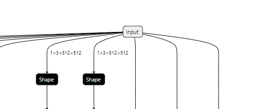

1.8. hb_model_modifier 工具
hb_model_modifier 工具用于对指定的runtime模型中输入端的Transpose、Quantize节点和输出端的Transpose、Dequanti、Cast、Reshape、softmax节点进行删除操作，
并将删除节点的信息存放在BIN模型中，可以通过 hb_model_info 进行查看。
备注
hb_model_modifier工具只能删除紧挨着模型输入或输出的节点。如果待删除节点后面如果接的是其他节点，则不能进行删除操作。
模型节点名称需要注意不要包括 “;” “,” 等特殊符号，否则可能会影响工具的使用。
工具不支持对打包的模型进行处理，否则将提示：
ERROR pack model is not supported。待删除节点会按顺序依次删除, 并且会动态更新模型结构; 同时在节点删除前还会判断该节点是否位于模型的输入输出处, 因此节点的删除顺序很重要。
由于删除特定节点后会对模型的输入情况有影响, 因此工具只对模型输入后只有一条通路的情况适用, 若如下图中所示, 同一输入对应了多个节点的情况尚不支持。
1.8.1. 使用方式
查看可删除的节点：
hb_model_modifier model.bin
删除单个指定节点（以node1为例）：
hb_model_modifier model.bin -r node1
删除多个指定节点（以node1、node2、node3为例）：
hb_model_modifier model.bin -r node1 -r node2 -r node3
删除某类节点（以Dequantize为例）：
hb_model_modifier model.bin --all Dequantize
删除多种类型节点（以Reshape、Cast、Dequantize为例）：
hb_model_modifier model.bin -a Reshape -a Cast -a Dequantize
组合使用：
hb_model_modifier model.bin -a Reshape -a Cast -a Dequantize -r node1 -r node2 -r node3
1.8.2. 命令行参数
- hb_model_modifier的命令行参数
- model_file
runtime 模型文件名称。
- -r
后接指定删除节点的名称。若有多个节点需要删除, 需要指定多次。
- -o
后接修改后的模型输出名称(仅在有
-r参数时生效)。
- -a/--all
后接节点类型. 支持一键删除所有对应类型的功能. 若有多个类型节点需要删除, 需要指定多次。
1.8.3. 输出内容解析
若工具后不接任何参数，则工具会打印出可供候选的可删除节点（即模型中的位于输入输出位置的所有transpose、quantize、Dequantize、Cast、Reshape、softmax节点）。
其中Quantize节点用于将模型 float 类型的输入数据量化至 int8 类型，其计算公式如下：
`qx = clamp(round(x / scale) + zero\_point, -128, 127)`
round(x) 实现浮点数的四舍五入， clamp(x) 函数实现将数据钳位在-128~127之间的整数数值。 zero_point`为非对称量化零点偏移值，对称量化时 `zero_point = 0 。
C++的参考实现如下：
int64_t quantized_value =
static_cast<int64_t>(std::round(value / static_cast<double>(scale)));
quantized_value =
std::min(std::max(quantized_value, min_int_value), max_int_value);
dequantize节点则用于将模型 int8 或 int32 类型的输出数据反量化回 float 或 double 类型，其计算公式如下：
`deqx = (x - zero\_point) * scale`
C++的参考实现如下：
static_cast<float>(value) * scale
备注
目前工具支持删除：
输入部位的节点为quantize或transpose节点；
输出部位的节点为Transpose、Dequanti、Cast、Reshape、softmax节点。
工具打印信息如下：
hb_model_modifier resnet50_64x56x56_featuremap.bin
2022-04-21 18:22:30,207 INFO Nodes that can be deleted: ['data_res2a_branch1_HzQuantize_TransposeInput0', 'fc1000_reshape_0']
在指定 -r 选项后，工具会打印模型中该节点的类型，储存在bin文件中的节点信息以及告知指定节点已被删除：
hb_model_modifier resnet50_64x56x56_featuremap.bin -r data_res2a_branch1_HzQuantize_TransposeInput0
Node 'data_res2a_branch1_HzQuantize_TransposeInput0' found, its OP type is 'Transpose'
Node 'data_res2a_branch1_HzQuantize_TransposeInput0' is removed
modified model saved as resnet50_64x56x56_featuremap_modified.bin
之后可以通过 hb_model_info 工具查看被删除节点信息，输出信息末尾会打印被删除节点的名称，同时会生成 deleted_nodes_info.txt 文件，
文件中每一行记录了对应被删除节点的初始信息(此处仅会记录 Quantize, Dequantize 和 Transpose类型的节点信息)。
打印被删除节点的名称步骤如下所示：
hb_model_info resnet50_64x56x56_featuremap_modified.bin
Start hb_model_info....
hb_model_info version 1.7.0
********* resnet50_64x56x56_featuremap info *********
...
--------- deleted nodes -------------------
deleted nodes: data_res2a_branch1_HzQuantize_TransposeInput0